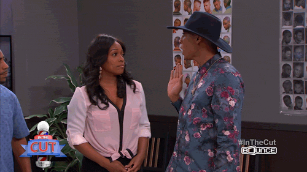
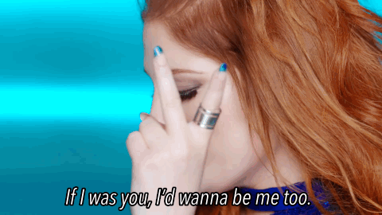
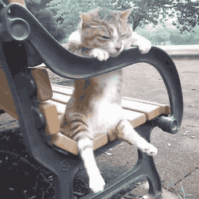
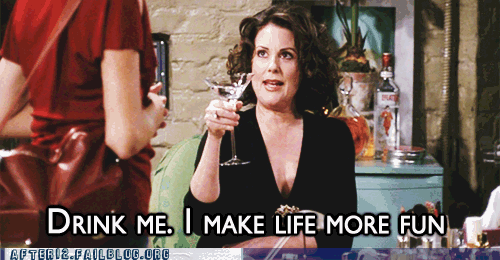

The 8 Stages of Dry January
We salute the Cider fans that are nearly at the end of this wretched month - in training for half marathons what you're doing is truly admirable! If you’re still going...you’re doing better than us.
Stage 1: Enthusiasm
It's January 1st, you've drank all the Cider in the house over Christmas and you’ve got this. 31 days right? Easy.

Stage 2: Confidence
This is going to be amazing! You’ll enjoy Sunday morning jogs more than ever before and you won't miss Cider whatsoever...not even when you order a coke at the pub down the road.
Stage 3: Smugness
You shake your head in disappointment at all the hungover cider fans struggling through Sunday. You rub in your new 5k PB and pity those who count the hours down to happy hour on a Friday.

Stage 4: Boredom
Sunday morning jogs aren't as fun when there’s no self-congratulatory drink down the line right? Where is the play in the work hard play hard… You start to feel like an outsider in your offices nonsensical drunk friday night chats.

Stage 5: Temptation
If you accidentally have some of your friends cider… you thought it was apple juice right?

Stage 6: Bargaining
You’re risking being labelled boring and surely your liver has regenerated itself by now? Your favourite bar has a january only offer... YOLO Right?
Stage 7: Lying
No one needs to know about that celebratory can of Brothers when you hit a new run mileage target…
Stage 8: Submission
There's always next year.